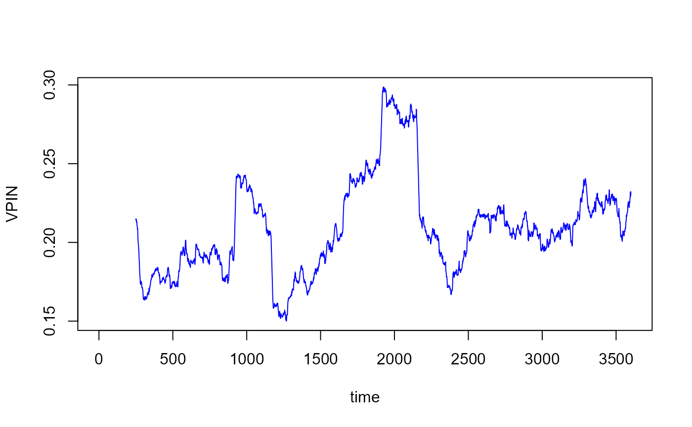

Estimates the Volume-Synchronized Probability of Informed Trading as developed in Easley et al. (2011) and Easley et al. (2012) .
Usage
vpin(data, timebarsize = 60, buckets = 50, samplength = 50,
tradinghours = 24, verbose = TRUE)Arguments
- data
A dataframe with 3 variables:
{timestamp, price, volume}.- timebarsize
An integer referring to the size of timebars in seconds. The default value is
60.- buckets
An integer referring to the number of buckets in a daily average volume. The default value is
50.- samplength
An integer referring to the sample length or the window size used to calculate the
VPINvector. The default value is50.- tradinghours
An integer referring to the length of daily trading sessions in hours. The default value is
24.- verbose
A binary variable that determines whether detailed information about the steps of the estimation of the VPIN model is displayed. No output is produced when
verboseis set toFALSE. The default value isTRUE.
Details
The dataframe data should contain at least three variables. Only the
first three variables will be considered and in the following order
{timestamp, price, volume}.
The property @bucketdata is created as in
Abad and Yague (2012)
.
The argument timebarsize is in seconds enabling the user to implement
shorter than 1 minute intervals. The default value is set to 1 minute
(60 seconds) following Easley et al. (2011, 2012).
The parameter tradinghours is used to eventually correct the duration per
bucket. The duration of a given bucket is the difference between the
timestamp of the last trade endtime and the timestamp of the first trade
stime in the bucket. If the first trade and the last trade in a
bucket occur in two different days, and the market trading session does not
cover a full day (24 hours); then the duration of the bucket will be
inflated. Assume that the daily trading session is 8 hours
(tradinghours=8), the start time of a bucket is 2018-10-12 17:06:40
and its end time is 2018-10-13 09:36:00. A straightforward calculation
gives that the duration of this bucket is 59,360 secs. However, this
duration includes the time during which the market is closed (16 hours).
The corrected duration takes into consideration only the time of market
activity: duration=59,360-16*3600= 1760 secs, i.e., about 30 minutes.
References
Abad D, Yague J (2012).
“From PIN to VPIN: An introduction to order flow toxicity.”
The Spanish Review of Financial Economics, 10(2), 74--83.
Easley D, De Prado MML, Ohara M (2011).
“The microstructure of the \"flash crash\": flow toxicity, liquidity crashes, and the probability of informed trading.”
The Journal of Portfolio Management, 37(2), 118--128.
Easley D, Lopez De Prado MM, OHara M (2012).
“Flow toxicity and liquidity in a high-frequency world.”
Review of Financial Studies, 25(5), 1457--1493.
ISSN 08939454.
Examples
# There is a preloaded dataset called 'hfdata' contained in the package.
# It is an artificially created high-frequency trading data. The dataset
# contains 100 000 trades and five variables 'timestamp', 'price',
# 'volume', 'bid' and 'ask'. For more information, type ?hfdata.
xdata <- hfdata
# Estimate VPIN model, using the following parameter set where the time
# bar size is 5 minutes, i.e., 300 seconds (timebarsize = 300), 50
# buckets per average daily volume (buckets = 50), and a window size of
# 250 for the VPIN calculation (samplength = 250).
estimate <- vpin(xdata, timebarsize = 300, buckets = 50, samplength = 250)
#> [+] VPIN Estimation started.
#> |-[1] Checking and preparing the data...
#> |-[2] Creating 300-second timebars...
#> |-[3] Calculating Volume Bucket Size (VBS) and Sigma(DP)...
#> |-[4] Breaking up large 300-second timebars' volume...
#> |-[5] Assigning 300-second timebars into buckets...
#> |-[6] Balancing timebars and adjusting bucket sizes to VBS...
#> |-[7] Calculating aggregate bucket data...
#> |-[8] Calculating VPIN vector...
#> [+] VPIN estimation completed
# Display a description of the estimate
show(estimate)
#> ----------------------------------
#> VPIN estimation completed successfully
#> ----------------------------------
#> Type object@vpin to access the VPIN vector.
#> Type object@bucketdata to access data used to construct the VPIN vector.
#> Type object@dailyvpin to access the daily VPIN vectors.
#>
#> VPIN model
#>
#> Table:
[+] VPIN descriptive statistics
#>
#> Min. 1st Qu. Median Mean 3rd Qu. Max. NA's
#> ------ --------- -------- ------ --------- ------ ------
#> 0.18 0.23 0.25 0.27 0.29 0.41 249
#>
#>
#> Table:
[+] VPIN parameters
#>
#> tbSize buckets samplength VBS #days
#> -------- --------- ------------ ---------- -------
#> 300 50 250 3836.547 73
#>
#> -------
#> Running time: 2.815 seconds
# Plot the estimated VPIN vector
plot(estimate@vpin, type = "l", xlab = "time", ylab = "VPIN", col = "blue")

# Display the parameters of VPIN estimates
show(estimate@parameters)
#> tbSize buckets samplength VBS #days
#> 300.000 50.000 250.000 3836.547 73.000
# Store the computed data of the different buckets in a dataframe 'buckets'.
# Display the first 10 rows of the dataframe 'buckets'.
buckets <- estimate@bucketdata
show(head(buckets, 10))
#> bucket agg.bvol agg.svol aoi starttime
#> 1 1 1826.317 2010.230237 183.9131 2018-10-18 00:11:33
#> 2 2 1595.625 2240.921968 645.2965 2018-10-18 01:01:33
#> 3 3 2070.871 1765.676155 305.1951 2018-10-18 01:41:33
#> 4 4 2470.324 1366.223178 1104.1010 2018-10-18 02:51:33
#> 5 5 2102.734 1733.812999 368.9214 2018-10-18 03:36:33
#> 6 6 3835.394 1.153561 3834.2403 2018-10-18 04:31:33
#> 7 7 3835.394 1.153561 3834.2403 2018-10-18 04:31:33
#> 8 8 3835.394 1.153561 3834.2403 2018-10-18 04:31:33
#> 9 9 3835.394 1.153561 3834.2403 2018-10-18 04:31:33
#> 10 10 3829.606 6.941283 3822.6648 2018-10-18 04:31:33
#> endtime vpin duration
#> 1 2018-10-18 01:01:33 NA 3000
#> 2 2018-10-18 01:41:33 NA 2400
#> 3 2018-10-18 02:51:33 NA 4200
#> 4 2018-10-18 03:36:33 NA 2700
#> 5 2018-10-18 04:31:33 NA 3300
#> 6 2018-10-18 04:31:33 NA 0
#> 7 2018-10-18 04:31:33 NA 0
#> 8 2018-10-18 04:31:33 NA 0
#> 9 2018-10-18 04:31:33 NA 0
#> 10 2018-10-18 04:36:33 NA 300
# Store the daily VPIN values (weighted and unweighted) in a dataframe
# 'dayvpin'.
# Display the first 10 rows of the dataframe 'dayvpin'.
dayvpin <- estimate@dailyvpin
show(head(dayvpin, 10))
#> day dvpin dvpin_weighted
#> 1 2018-10-22 0.2401930 0.2505410
#> 2 2018-10-23 0.2179078 0.2179678
#> 3 2018-10-24 0.2028352 0.2017931
#> 4 2018-10-25 0.1959551 0.1954544
#> 5 2018-10-26 0.1903389 0.1911104
#> 6 2018-10-27 0.2128983 0.2132257
#> 7 2018-10-31 0.2116881 0.2115984
#> 8 2018-11-01 0.2229720 0.2275468
#> 9 2018-11-07 0.2328595 0.2354824
#> 10 2018-11-08 0.2409957 0.2409957